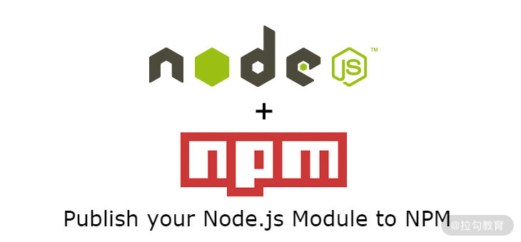

- 00 开篇词 建立上帝视角，全面系统掌握前端效率工程化.md.html
- 01 项目基石：前端脚手架工具探秘.md.html
- 02 界面调试：热更新技术如何开着飞机修引擎？.md.html
- 03 构建提速：如何正确使用 SourceMap？.md.html
- 04 接口调试：Mock 工具如何快速进行接口调试？.md.html
- 05 编码效率：如何提高编写代码的效率？.md.html
- 06 团队工具：如何利用云开发提升团队开发效率？.md.html
- 07 低代码工具：如何用更少的代码实现更灵活的需求.md.html
- 08 无代码工具：如何做到不写代码就能高效交付？.md.html
- 09 构建总览：前端构建工具的演进.md.html
- 10 流程分解：Webpack 的完整构建流程.md.html
- 11 编译提效：如何为 Webpack 编译阶段提速？.md.html
- 12 打包提效：如何为 Webpack 打包阶段提速？.md.html
- 13 缓存优化：那些基于缓存的优化方案.md.html
- 14 增量构建：Webpack 中的增量构建.md.html
- 15 版本特性：Webpack 5 中的优化细节.md.html
- 16 无包构建：盘点那些 No-bundle 的构建方案.md.html
- 17 部署初探：为什么一般不在开发环境下部署代码？.md.html
- 18 工具盘点：掌握那些流行的代码部署工具.md.html
- 19 安装提效：部署流程中的依赖安装效率优化.md.html
- 20 流程优化：部署流程中的构建流程策略优化.md.html
- 21 容器方案：从构建到部署，容器化方案的优势有哪些？.md.html
- 22 案例分析：搭建基本的前端高效部署系统.md.html
- 23 结束语 前端效率工程化的未来展望.md.html
- 捐赠
09 构建总览：前端构建工具的演进
今天开始我们进入本专栏的第二模块：构建效率。本模块主要探讨如何优化构建细节。在这之前，我想先聊一聊前端开发历程中构建工具的演进。通过这节课，让你对构建工具的诞生发展及它们各自解决的问题有一个直观了解。
前端开发语言的诞生
前端开发语言发展历程回顾： 1991 年，Tim Berners-Lee 发布了第一份 HTML 标准。 1994 年，Håkon Wium Lie提出了 CSS 的概念，两年后 HTML 4.0 中首次支持了 CSS。IE3 也成了第一个支持 CSS 的商用浏览器。 1995 年，Brendan Eich 发明了名为*Mocha*的浏览器脚本语言，并在随后命名为了*LiveScript，几个月后又重新命名为我们现在所熟知的JavaScript*。 1997 年，随着 IE4 的发布，*DHTML*（Dynaimic HTML）的概念被提出，指代用于创建包含交互和动画效果页面的一系列技术结合，包括 HTML、CSS、JS、DOM 等。 2004 年，*Ajax*技术随着 Google 在 Gmail 中的广泛运用而逐渐被更多的 Web 开发者所使用（尽管最早的 Ajax 可以追溯到 1999 年 IE5 时代的 XMLHTTP ActiveX）。
前端主要的开发语言：HTML、CSS 和 JS 都诞生在 20 世纪 90 年代。2000 年前，网页呈现和交互都较为简单，开发框架和处理工具都在孕育中，即便是早期前端开发者所熟知的 jQuery 框架，也远未出现。
文件压缩与合并工具
文件压缩与合并工具发展历程回顾： 2001 年，Douglas Crockfold 发布了 JSMin工具，用于去除 JS 代码中的注释和空格。 2004 年，Dave Shea 在他的文章中参考早期游戏开发中使用的 Sprite 图方案，提出了 CSS Sprite 的概念，即将多张小图合成为一张大图，然后通过 CSS 控制在不同元素中使用图片的局部区域，从而减少网络请求，提升网页性能。 2006 年，Yahoo 发布了 YUI 库，其中包含了基于 Java 的代码压缩工具 YUI Compressor。 2009 年，Google 发布了 Closure Toolkit，其中包含的 Closure Compiler 提供了比 YUI Compressor更多的代码优化功能，并支持 Source Map 和多文件合并。 2010 年，Mihai Bazon 发布了压缩工具UglifyJS，并在 2012 年的升级版本 UglifyJS2 中增加了对 Source Map 的支持。
2000 年以后的 10 年里，随着更多 CSS 与 JS 框架的诞生，代码优化的工具也应运而生。为了获得更好的访问体验，开发者需要更少的资源连接数与更小的文件体积，这就分别对应了两类工具：文件压缩工具和合并工具。
- 在压缩工具方面：从 JSMin、YUI Compressor 到 Closure Compiler 和 UglifyJS，压缩与优化的性能不断完善。
- 在合并工具方面：CSS Sprite 技术的提出解决了网页中大量素材图片的加载性能问题，而在此期间，Sprite 图片还主要通过设计工具来手动生成，例如 PS 等，直到下个十年才出现自动化的生成工具。而代码文件的合并，可以在命令行中通过输出到文件手动完成；此外在 Closure Compiler 工具中也包含了将多个文件合并为一个的参数。
这个时期的工具有一些共同点，例如都是基于其他语言（例如 C 和 Java）实现的，因此需要安装对应的依赖环境，这些工具也都需要通过命令行执行。对于用户来说，随着开发项目的增多，容易造成效率的低下。这类问题直到下一个十年，随着 NodeJS 的发布才逐渐改变。
包管理工具
包管理工具发展历程回顾： 2009 年，Ryan Dahl 发布了第一个版本的Node.js。 2010 年，Node.js 核心开发人员Isaac Z. Schlueter 编写了对应环境的包管理工具npm。 2012 年，Twitter 发布了名为Bower的前端依赖包管理工具。 2016 年，Facebook 发布了 npm registry 的兼容客户端Yarn。

人们可以把代码包发布到 npm 中
2009 年 NodeJS 发布，这对前端开发领域产生了深远的影响。一方面，许多原先基于其他语言开发的工具包如今可以通过 NodeJS 来实现，并通过 npm（Node Package Manager，即 node 包管理器）来安装使用。大量的开发者开始将自己开发的工具包发布到 npm registry 上，包的数量在 2012 年初就达到了 6,000 个，而到 2014 年，数字已经上升到了 50,000 个。
另一方面，安装到本地的依赖包在前端项目中如何引用开始受到关注。Twitter 发布的 Bower 旨在解决前端项目中的依赖安装和引用问题，其中一个问题是，在 npm 安装依赖的过程中会引入大量的子包，在早期版本（npm 3 之前）中会产生相同依赖包的大量重复拷贝，这在前端项目中会导致无谓的请求流量损耗。而 Bower 在安装依赖时则可以避免这类问题。然而随着更多模块化打包工具的诞生，它的优势逐渐被其他工具所取代。直到 2017 年，Bower 官方宣布废弃这个项目。
著名的 node_modules hell（源自 reddit 用户 xaxaxa_trick）
npm 的另一个饱受诟病的问题是本地依赖管理算法的复杂性以及随之而来的性能、冗余、冲突等问题。而 2016 年发布的 Yarn 正是为解决这些问题而诞生的。和 npm 相比，Yarn 的主要优点有：
- 安装速度：由于 Yarn 在安装依赖时采用的是并行操作，以及它在缓存依赖包时相比 npm 缓存的数据更完整，因此它在初次与重复安装依赖时，普遍都会比 npm 更快。
- 稳定性：npm 5 引入的 package-lock 文件，在每次执行 npm install 时仍然会检查更新符合语义规则的依赖包版本，而 yarn.lock 则会严格保证版本的稳定性（尽管，yarn.lock 不能保证 node_modules 的拓扑稳定性）。
- Plug’n’Play（PnP）：Yarn 2.0 发布了 PnP的功能（在更早期的 1.12 版本中就已实现）。PnP 方案具有提升项目安装与解析依赖的速度，以及多项目共享缓存（与普通缓存相比，免去了读写 node_modules 的大量 I/O 操作)，节省占用空间等优势。
任务式构建工具
任务式构建工具发展历程回顾： 2012 年，Ben Alman 发布了基于任务的构建工具 Grunt。 2013 年，Eric Schoffstall 发布了流式的构建工具 Gulp。
随着 NodeJS 和 npm 的发布，大量的前端工具包发布到 npm 仓库，开发者通过简单的命令行指令就可以方便地下载和使用，前端的工程化也在这一时期开始蓬勃发展。其中一种趋势就是，使用自动化的任务式构建工具来替代手工执行各种处理命令。
Grunt 和 Gulp 这两种任务式的构建工具的基本组成包括：核心的处理工具（grunt-cli/gulp-cli）、配置文件（Gruntfile/Gulpfile），以及一系列常用的任务插件（Clean、Watch、Copy、Concat、Uglify、CssMin、Spritesmith……）。在项目里通过编写配置文件，就可以定义工作流程中的各种自动化构建处理，例如在发生变更时，通过 Watch 插件监控文件，从而自动执行代码的检查与压缩等。
Grunt vs Gulp
这两种工具的差异性主要体现在：
- 读写速度：Gulp 在处理任务的过程中基于 NodeJS 的数据流，本质上是操读写内存，而 Grunt 则是基于临时文件，因此在读写速度上 Gulp 要快于Grunt。
- 社区使用规模：截止编写课程的时间点，在 npmjs.com 的周下载量方面，Gulp 为 1,200,000+，约是 Grunt 的两倍。而在插件数量方面，Grunt 社区提供了超过 6000 个不同功能的插件，而 Gulp 社区的插件数量则是 4000 多个。
- 配置文件的易用性：相比描述不同插件配置信息的 Gruntfile 而言，使用 pipe 函数描述任务处理过程的方式通常更易于阅读，但编写时需要对数据流有更深入的理解。
任务式的构建工具，虽然解决了开发流程中自动化执行预设任务的问题，但不能解决项目中代码如何组织成不同功能的代码包、不同代码之间如何相互依赖等问题。而解决这类问题的方式就是：模块化。
模块化：模块定义与模块化的构建工具
模块化发展历程回顾： 2009 年，Kevin Dangoor 发起了 ServerJS 项目，后更名为 CommonJS，其目标是指定浏览器外的 JS API 规范（例如 FS、Stream、Buffer 等）以及模块规范 Modules/1.0。这一规范也成为同年发布的 NodeJS 中的模块定义的参照规范。 2011 年，RequireJS 1.0 版本发布，作为客户端的模块加载器，提供了异步加载模块的能力。作者在之后提交了 CommonJS 的 Module/Transfer/C 提案，这一提案最终发展为了独立的 AMD 规范。 2013 年，面向浏览器端模块的打包工具Browserify发布。 2014 年，跨平台的前后端兼容的模块化定义语法 UMD发布。 2014 年，Sebastian McKenzie 发布了将 ES6 语法转换为 ES5 语法的工具 6to5，并在之后更名为Babel。 2014 年，Guy Bedford 对外发布了 SystemJS 和 jspm 工具，用于简化模块加载和处理包管理。 2014 年，打包工具 Webpack 发布了第一个稳定版本。 2015 年，ES6（ES2015）规范正式发布，第一次从语言规范上定义了 JS 中的模块化。 2015 年，Rich Harris 发布的 Rollup 项目，基于 ES6 模块化，提供了 Tree Shaking 的功能。
模块化的不同规范
- CommonJS：在 CommonJS 出现之前，一个 JS 类库只能通过暴露全局对象的方式，供其他 JS 文件使用，这样的方式有着诸多的问题，例如变量污染等。CommonJS 作为非浏览器端的 JS 规范，它的基本要素如下：
- 模块定义：一个模块即是一个 JS 文件，代码中自带 module 指向当前模块对象；自带 exports=module.exports，且 exports 只能是对象，用于添加导出的属性和方法；自带 require 方法用于引用其他模块。完整的 module 对象可参考NodeJS 中的相关介绍。
- 模块引用：通过引用 require() 函数来实现模块的引用，参数可以是相对路径也可以是绝对路径。在绝对路径的情况下，会按照 node_modules 规则递归查找，在解析失败的情况下，会抛出异常。
- 模块加载：require() 的执行过程是同步的。执行时即进入到被依赖模块的执行上下文中，执行完毕后再执行依赖模块的后续代码。可参考官方文档中说明这一过程的示例代码。
- AMD：CommonJS 的 Modules/1.0 规范从一开始就注定了只能用于服务端，不能用于浏览器端。这一方面是因为模块文件中没有函数包裹，变量直接暴露到全局；另一方面则因为浏览器端的文件需要经过网络下载，不适合同步的依赖加载方式，因此出现了适用于浏览器端的模块化规范 AMD。AMD 规范的基本要素如下：
- 模块定义：通过define(id?, dependencies?, factory) 函数定义模块。id 为模块标识，dependencies 为依赖的模块，factory 为工厂函数。factory 传入的参数与 dependencies 对应，若不传 dependencies，则 factory 需要默认传入 require、exports，以及 module，或只传入 require，但使用 return 做导出。
- 模块引用：最早需要通过 require([id], callback) 方式引用，之后也支持了类似 CommonJS 的 var a = require(‘a’) 的写法。
- UMD：UMD 本质上是兼容 CommonJS 与 AMD 这两种规范的代码语法糖，通过判断执行上下文中是否包含 define 或 module 来包装模块代码，适用于需要跨前后端的模块。
- ES Module：ECMA 规范组织在 2015 年 6 月发布的 ES6 版本中，首次提出了 JS 标准的模块化概念，具体要素如下：
- 模块定义：模块内支持两种导出方式，一种通过 export 关键字导出任意个数的变量，另一种通过 export default 导出，一个模块中只能包含一个 default 的导出类型。
- 模块引用：通过 import 关键字引用其他模块。引用方式分为静态引用和动态引用。静态引用格式为*import importClause from ModuleSpecifier*，import 表达式需要写在文件最外层上下文中；动态引用的方式则是 import()，返回 promise 对象。
下面我们介绍一些模块化的构建工具。
模块化的构建工具
- RequireJS：正如前面介绍的，RequireJS 的核心功能是支持 AMD 风格的模块化代码运行。
- Browserify：与前者不同，Browserify 的目标是让 CommonJS 风格的代码也运行在浏览器端，除了提供语法糖外，还提供了一些经过处理后且在浏览器端运行的 NodeJS 的核心模块。
- Babel：Babel 的定位一直是 Transformer，即语法转换器，它承担着将 ES6、JSX 等语法转换为 ES5 语法的核心功能，被广泛地运用于其他构建工具中。
- SystemJS：SystemJS 是兼容各种模块化规范的运行时工具。
- Webpack：Webpack 一方面兼容各种模块化规范的标识方法，另一方面将模块化的概念延伸到其他类型的文件中，创造性地打造了一种完全基于模块的新的构建体系。在下一节课中我会再深入讲解。
- Rollup：Rollup 在诞生之初率先实现了 Tree Shaking 功能，以及天然支持 ES6 模块的打包。虽然这些主要功能在 Webpack 发展的后续版本中也逐步支持，但其简单的 API 仍然广受许多库开发者的青睐。
总结
这节课中，我们讨论了前端构建工具的演进：从早期的单独功能的压缩与合并工具，到 NodeJS 与包管理工具的诞生，随之而来的是任务式构建工具的发展，以及模块化概念与工具的不断探索。我们现在使用的构建工具，一方面立足于这些过去积累下来的前人的经验与智慧，另一方面也顺应着不断发展的前端开发需求。
本节课的课后讨论题是：最后出现的模块化的构建工具为什么能取代任务式的构建工具呢？以 Webpack 为例来聊聊看吧。
下节课，我们深入到 Webpack 的体系中，来聊一聊 Webpack 的完整工作流程。
© 2019 - 2023 Liangliang Lee. Powered by gin and hexo-theme-book.